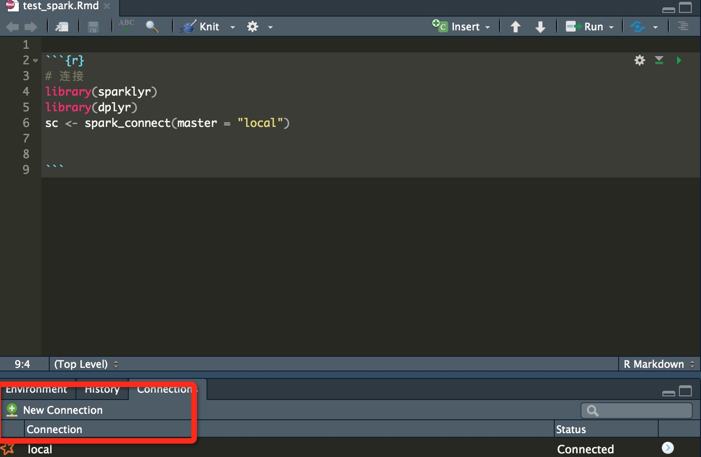

官网：
http://spark.rstudio.com/
内网wiki
http://gollum.baidu.com/sparkR-starter
dplyr
https://cran.rstudio.com/web/packages/dplyr/vignettes/introduction.html
安装步骤：
install.packages("sparklyr")
library(sparklyr)
#spark_install(version = "1.6.2")
# install spark
spark_install(version = "2.1.0")
18机器上root用户登陆,安装成功
#安装
install.pacakges(sparklyr)
spark_install(version = "2.1.0")
list
http://wiki.baidu.com/pages/viewpage.action?pageId=35960132
使用demo
# 连接
library(sparklyr)
library(dplyr)
sc <- spark_connect(master = "local")
或者是直接通过Rstudio的交互界面连接：

在18机器的Rstudio上测试一些模型试验效果